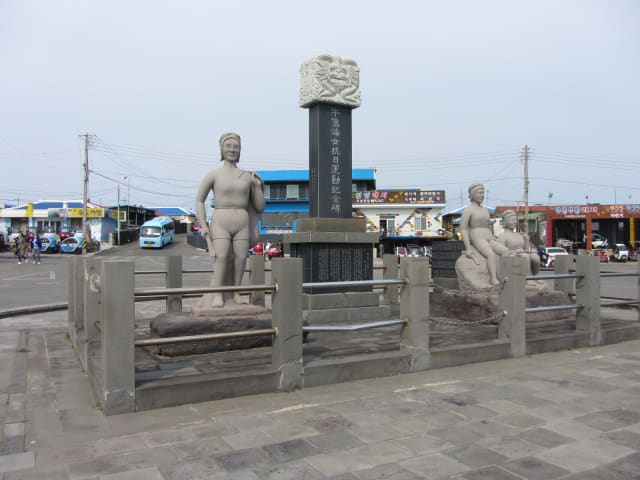

離開指頭青沙, 循偶來小路 1-1 號一直走, 穿過田野後, 迎面是一個村落, 村落後面便是大海, 看看地圖, 到達天津港了。已經差不多下午三時, 前面還有很遠的路, 看來要加快腳步。
繼續沿步道向前走, 穿過前面的村落便是天津港口。

呵呵呵~~~~ 看到港口長堤上的燈塔了!
看見港口的燈塔後, 她的腳步突然加快了很多。
牛島天津港口 (우도 천진항 CheonJin Port)
走出村落, 迎面是一個很熱鬧的港口, 很明顯是天津港口啦!
望望遠處的碼頭, 剛好有一艘渡輪停泊, 乘客已經開始上船, 汽車也排隊準備駛上甲板。望望手錶, 剛好是下午三時, 心想應該是下午三時往城山的渡輪。
「渡輪是不是往城山?」她問。
「應該是往城山的!」我隨便的回答。
「那麼, 我們為什麼不在這裡搭船返回城山? 前面還有很多景點?」她繼續追問。
「前面只有一個景點, 不太吸引的, 其實可以不去的。」我猶疑了一會, 繼續說。「只是, 據網上的資料, 我們的回程船票必須在下船的港口乘搭, 即是下木洞港, 否則要另買船票的!」
「唉! 網上的資料, 很多都是估估下, 當秘笈, 亂 UP 就當真, 就好像 T-money 卡, 又話下車不拍卡要罰款, 統統都是亂 UP 的!」她說。
我沒有回答。
「不如走去試試可不可以上船便知道啦! 又可以確定是否要另買船票! 如果要買票, 便不上船囉!」她繼續說。「快 D 決定啦! 船很快起航!」

回程船票可以在天津港或下木洞港乘搭!
接著匆匆跑往碼頭, 沿長堤一直往前跑, 其實頗遠的。氣呼呼的來到剪票處, 戰戰兢兢的將回程船票遞給票務員。票務員收了我們的船票, 揮手示意我們快些上船。
哈哈~~ 原來回程船票是可以在天津港口乘搭的! 唉! 回程船票必須在下船的港口乘搭這資料又是錯的!
急急走往渡輪, 轉頭望望, 汽車也開始準備駛上渡輪甲板了。
和來的時候一樣, 都是最後兩位登船的乘客, 只是沒有那麼趕, 起碼可以在登船前拍照留念。